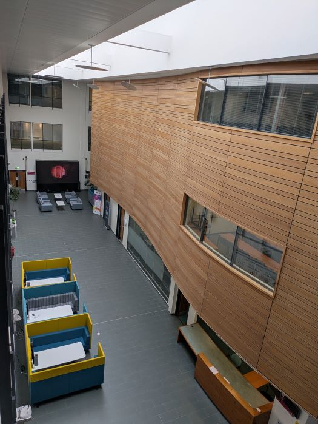

Computing Courses
The College offers a range of courses to suit applicants with varying backgrounds and educational abilities. At undergraduate level, there are single BSc Honours Degree courses in Computing, Computer Networks, Software Engineering and Cyber Security with Forensics amongst others.
The College teaches undergraduate and postgraduate courses in a wide range of specialisms, including computer science, software development, information systems, networking and software engineering. It is at the heart of a passionate computing community, including student societies devoted to games development, digital forensics and programming.
The courses are British Computer Society accredited and are highly relevant to modern industry. They are designed to prepare students for professional occupations in Computing and related fields. Many graduates continue their studies to pursue a higher degree such as an MSc. or PhD.
Design Courses
The College is an internationally connected creative community of diverse disciplines housed under one roof. We shape our students' futures, preparing them to shape the world through applied knowledge and creativity.
The College's art and design courses don't just train you, they promote alternative ways of thinking, making and communicating; they provide you with space, tools and inspiration to develop your creative practice and a clear career path. You'll get expert teaching from active practitioners and researchers who will encourage you to adopt innovative and resourceful approaches that both perceive and create opportunities for better lives.
You’ll develop your creative practice whilst interacting with your peers in well-equipped studios, making and digital workshops. At the same time, you'll learn professional skills by working on applied briefs facilitated through our links with commercial clients, cultural institutions, businesses and organisations.